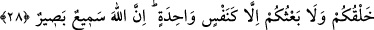

ALLÂH’IN SÖZLERİ
YAZMAKLA TÜKENMEZ
27. Şâyet yeryüzündeki ağaçlar kalem, deniz de arkasından yedi deniz katılarak
(mürekkep olsa) yine Allâh’ın sözleri (yazmakla) tükenmez. Şüphe yok ki Allah
mutlak galip ve hikmet sâhibidir.
28. (İnsanlar!) Sizin yaratılmanız ve diriltilmeniz, ancak tek bir kişinin
yaratılması ve diriltilmesi gibidir. Unutulmasın ki, Allah her şeyi işiten ve görendir.
29. Bilmez misin ki Allah, geceyi gündüze ve gündüzü geceye katmaktadır.
Güneşi ve ayı da buyruğu altına almıştır. Bunların her biri belli bir vâdeye kadar
akıp gider. Ve Allah, yaptıklarınızdan tamamen haberdardır.
30. Çünkü Allah, hakkın ta kendisidir; O’ndan başka taptıkları ise hiç şüphesiz
bâtıldır. Gerçekten Allah çok yüce, çok uludur.
“Şâyet yeryüzündeki ağaçlar kalem, deniz de arkasından” yâni denizin bitip yok
olmasının ardından -En doğrusunu Allah bilir- Çin denizi, Kamus’ta geçtiği üzere
Tübbet denizi, Hint denizi, Sind (Umman) denizi, Fars denizi, doğu ve batı denizi gibi
“yedi deniz katılarak” ilâve edilerek ve dökülerek “(mürekkep olsa) yine Allâh’ın
sözleri (yazmakla) tükenmez.” Yâni o kalemler ve mürekkep biter de, O’nun ilim ve
hikmetiyle ilgili hususlar yazmakla bitmez. Bu konu Kehf sûresinin sonunda “De ki:
Deniz mürekkep olsa…” (el-Kehf 18/109) âyetinin tefsirinde de incelenmişti.
Bu âyet yahudilerin Rasûlullah (s.a.)’e “…Size ancak az bir bilgi verilmiştir.” (el-
İsrâ, 17/85) âyeti hakkında sordukları veya sormaları için Kureyş temsilcilerine
emrettikleri zaman onlara cevap olarak inmiştir. Çünkü onlara göre Tevrat, içinde her
şeyin ilmi bulunduğu halde indirilmişti. Yâni Tevrat’taki bütün bilgiler, buna ilâveten